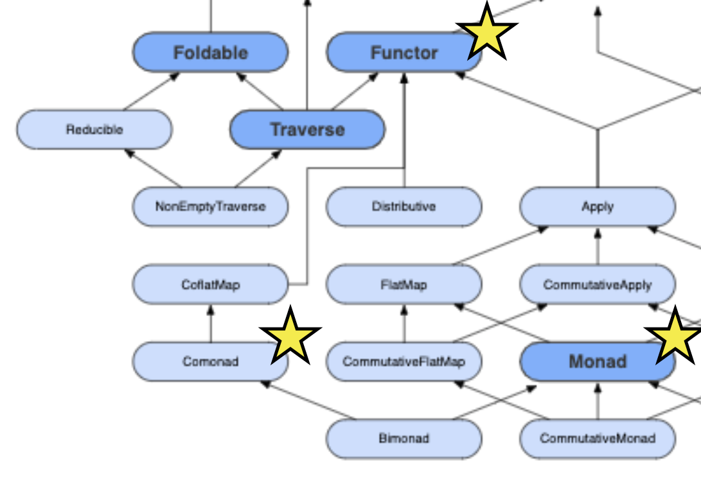
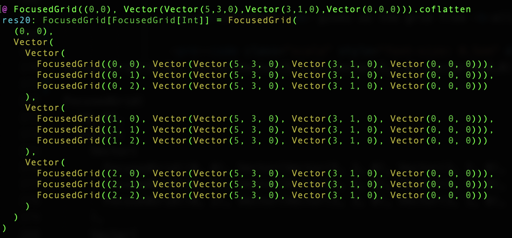

A Gentle Introduction to Comonads
Justin Heyes-Jones
Visit us on the Expo Floor
Agenda
Type Classes
Functors, Monads, Comonads
Application: Image processing
Application: Conway's Game of Life
Type classes
Like Java interfaces
Ad-hoc polymorphism
Haskell, Scala(Cats,Scalaz), Swift (Bow), Kotlin (Arrow)...
Type classes

Functors, Monads and Comonads
Scala
Type classes are typically implemented as traits
trait Show[A] {
def show(a: A): String
}
Show example
import cats._
import cats.syntax.show._
case class Person(name: String, yearOfBirth: Int)
implicit def showPerson = new Show[Person] {
def show(p : Person) = s"Person: ${p.name} born ${p.yearOfBirth}"
}
Person("Bob", 1989).show
// res5: String = "Person: Bob born 1989"
Data Types
Cats and Scala have many useful data types with type class instances and syntax helpers
val e1 = 5.asRight[String]
e1: Either[String, Int] = Right(5)
val nel1: NonEmptyList[Int] = NonEmptyList.of(1,2,3)
// nel1: NonEmptyList[Int] = NonEmptyList(1, List(2, 3))
Functor
trait Functor[F[_]] {
def map[A, B](fa: F[A])(f: A -> B): F[B]
}
Functor - example
Maps value of type A in a list to values of type B in a new list
import cats._
import cats.implicits._
List("Hello", ",", "how", " ", "are", "you", "?").map(_.size)
// List[Int] = List(5, 1, 3, 1, 3, 3, 1)
Monad
trait Monad[F[_]] extends Functor[F] {
def pure[A](x: A): F[A] // Also known as unit and return
def flatMap[A, B](fa: F[A])(f: (A) ⇒ F[B]): F[B] // (also bind)
}
Monad - Pure
pure simply constructs the effect with a pure value of type A
10.pure[List]
// List[Int] = List(10)
Monad - FlatMap
Flatmap lets us compose functions that take pure values and produce new values in some effect context
def intToDigits(n: Int) : List[Int] =
n.toString.toList.map(_.toString.toInt)
intToDigits(1001)
// List[Int] = List(1, 0, 0, 1)
def intToRepeatedInt(n: Int) : List[Int] =
List.fill(n)(n)
intToRepeatedInt(5)
// List[Int] = List(5, 5, 5, 5, 5)
intToDigits(12345).flatMap(intToRepeat)
// List[Int] = List(1, 2, 2, 3, 3, 3, 4, 4, 4, 4, 5, 5, 5, 5, 5)
Monad - FlatMap
With only map we get a nested result, usually not what we want...
intToDigits(12345).map(intToRepeat)
// List[List[Int]] = List(List(1),
// List(2, 2),
// List(3, 3, 3),
// List(4, 4, 4, 4),
// List(5, 5, 5, 5, 5))
Flatmap is a MAP followed by a FLATTEN
List[List[Int]] => List[Int]
F[F[A]] => F[A]
Comonad
trait Comonad[F[_]] extends Functor[F] {
def extract[A](x: F[A]): A
def coflatMap[A, B](fa: F[A])(f: F[A] => B): F[B]
}
Comonad - extract
Monad: pure
A => F[A]
Comonad: dual of pure is extract
F[A] => A
Comonad - Extract
import cats.data.NonEmptyList
val nel1 = NonEmptyList.of(1,2,3,4,5)
// NonEmptyList[Int] = NonEmptyList(1, List(2, 3, 4, 5))
nel1.extract
// Int = 1
Comonad - Unflatten
Unflatten is not part of Comonad's interface, but useful to understand coflatMap
def coflatten[A](fa: F[A]): F[F[A]]
val nel1 = NonEmptyList.of(100,200,300,400,500)
// NonEmptyList(100,200,300,400,500)
nel1.coflatten
// NonEmptyList(
// NonEmptyList(100,200,300,400,500)
// NonEmptyList(200,300,400,500)
// NonEmptyList(300,400,500)
// NonEmptyList(400,500)
// NonEmptyList(500))
Comonad - coflatMap
NonEmptyList.of(100,200,300,400,500).
coflatMap(list => list.toList.sum)
// NonEmptyList(1500, 1400, 1200, 900, 500)
Comonad - coflatMap
One of the comonad laws specifies...
NonEmptyList.of(100,200,300,400,500).coflatMap(_.extract) ==
NonEmptyList.of(100,200,300,400,500)
Which is why extract and coflatmap were implemented that way
Focused Grid
Represent a 2d array and a focus point
case class FocusedGrid[A](
focus: Tuple2[Int,Int],
grid : Vector[Vector[A]])
Focused Grid
extract gives the grid value at the focus
coflatten gives us the grid from all focus points
Focused Grid
Box filter
Take an average of a box of pixels around the focus point
def boxFilter(width: Int):
FocusedGrid[(Int, Int, Int)] => (Int, Int, Int) =
{ fg =>
val widthSqr = width * width
val sum = localSum(fg, (255, 255, 255), width)
((sum._1 / widthSqr).toInt,
(sum._2 / widthSqr).toInt,
(sum._3 / widthSqr).toInt)
}
No filtering

Box filter width 5 pixels
originalImage.coflatMap(boxFilter(5))

Box filter width 15 pixels
originalImage.coflatMap(boxFilter(15))

Compose a sequence of transformations
originalImage.
coflatMap(boxFilter(9)).
coflatMap(mirrorHorizontal)

Transform into two images then merge them
val ck1 = Cokleisli(mirrorVertical)
val ck2 = Cokleisli(mirrorHorizontal)
val ck1ck2Compose = ck1.
product(ck2).
map(blendTuple)
val ck1ck2ComposedProcess = originalImage.
coflatMap(ck1ck2Compose.run)
Transform in parallel then merge

Conway's Game of Life
def conwayStep(fg: FocusedGrid[Int]): Int = {
val liveNeighbours = localSum(fg)
val live = getAt(fg, fg.focus)
if (live == 1) {
if (liveNeighbours >= 2 && liveNeighbours <= 3)
1
else
0
} else {
if (liveNeighbours == 3) 1 else 0
}
}
// start.coflatMap(conwayStep).map(a => prettify(a)).show
Conway's Game of Life